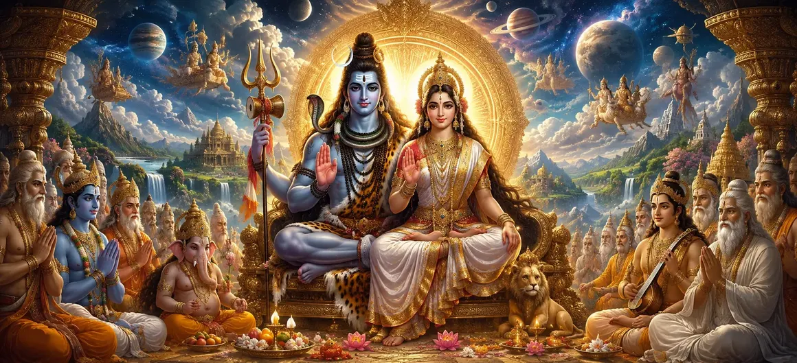

The Exalted Magnificence of Gauri and Shiva
The thirty-ninth chapter of the Vayaviya Samhita unveils the sublime cosmic grandeur and inseparable divine unity of Mother Gauri and Lord Shiva.
Sage Vayu illuminates how the divine couple constitutes the supreme dual principle underlying all creation, preservation, and dissolution.
This chapter extols their transcendental glory as the universal parents who bestow ultimate liberation upon sincere devotees.
Chapter 39 Highlights
Cosmic Parents
Celebrates Gauri and Shiva as the eternal mother and father of the universe.
Inseparable Unity
Depicts Shiva as pure consciousness and Gauri as dynamic cosmic energy.
Transcendent Glory
Reveals the magnificent attributes that surpass mortal comprehension.
Liberating Grace
Shows how their combined worship eradicates bondage and suffering.
Philosophical Depth
Expounds on the Advaita truth manifested through dual divine forms.
Narrative Flow
Prepares the spiritual groundwork for Chapter 40 on the Pashupati Principle.
Core Topics in This Chapter
The Universal Parentage of Gauri and Shiva
Rishi Vayu explains that just as mother and father nurture a family, Mother Gauri and Lord Shiva lovingly sustain the entire cosmos.
Every living being is their child, recipient of their boundless grace and compassionate care.
The Non-Duality of Shiva and Shakti
The chapter elaborates on the inseparable nature of Shiva (consciousness) and Gauri (energy), comparing them to fire and its burning power.
Neither can exist or function independently, for creation requires both static awareness and dynamic manifestation.
The Translucent Majesty of the Divine Couple
The luminous splendour of Gauri and Shiva outshines millions of suns, bathing the highest celestial realms in divine light.
Their transcendental form fills contemplative sages with unalloyed bliss and supreme wonder.
Bestowers of Supreme Emancipation
Devotees who meditate upon the joint majesty of Gauri and Shiva easily cut through the knots of worldly attachment.
The divine couple grants liberation (Moksha), absolving souls from the endless cycle of birth and rebirth.
Harmony and Balance in Cosmic Creation
Their divine interplay maintains cosmic balance, ensuring righteousness (Dharma) prevails across all dimensions of reality.
Understanding this grand harmony elevates a seeker's consciousness above mundane duality.
Conclusion of the Glorious Hymn
Chapter 39 concludes with glowing praises sung by celestial beings, honoring the unmatched majesty of Gauri and Shiva.
The narrative transitions gracefully toward the profound philosophical exposition of the Pashupati principle.
Transition to Chapter 40
Following the majestic celebration of Gauri and Shiva in Chapter 39, Rishi Vayu prepares to narrate Chapter 40, 'Knowledge of the Pashupati Principle'.
This subsequent chapter delves into the esoteric metaphysical truth of Pashupati—the Lord of all bound souls.
Key Teachings of Chapter 39
Universal Care
Gauri and Shiva sustain all creatures with parental tenderness.
Shiva-Shakti One
Consciousness and energy are two aspects of the same reality.
Transcendent Light
Their divine splendour illuminates the highest spiritual heights.
Moksha Bestowal
Joint worship releases souls from worldly bondage.
Cosmic Balance
Their interplay maintains universal righteousness and order.
Next Chapter
Leads into the Pashupati Principle in Chapter 40.
Spiritual Reflection
Recognizing Mother Gauri and Lord Shiva as the universal parents reminds us that creation is rooted in divine love, balance, and the ultimate harmony of consciousness and energy.
Living the Message of Chapter 39
Meditate upon the harmonious union of Shiva and Shakti to balance mind and energy.
View all living beings with compassion, seeing them as children of the divine parents.
Surrender worldly anxieties to the supreme grace of Gauri and Maheshwara.
Key Spiritual Concepts
The exalted glory and magnificence of Gauri and Shiva.
The non-dual principle of united consciousness and energy.
The universal parentage sustaining all existence.
The perfect equilibrium of divine energy and awareness.
The divine attribute of granting ultimate liberation.
The prelude to the Pashupati Principle in Chapter 40.
Chapter Summary
Vayaviya Samhita Chapter 39 presents The Exalted Magnificence of Gauri and Shiva. Unveiling their universal parentage, non-dual unity, and translucent splendour, this chapter inspires devotees with the grandeur of the divine couple. It establishes the spiritual foundation for Chapter 40, 'Knowledge of the Pashupati Principle'.
Frequently Asked Questions
1. What is the primary subject of Vayaviya Samhita Chapter 39?
Chapter 39 details the exalted cosmic magnificence, divine unity, and supreme power of Mother Gauri and Lord Shiva as the universal parents.
2. How is the relationship between Gauri and Shiva portrayed in this chapter?
They are portrayed as inseparable cosmic entities—Shiva as pure consciousness and Gauri as primordial energy (Shakti).
3. What spiritual significance does their divine form hold for devotees?
Their joint worship bestows liberation, harmony, and the realization of ultimate reality.
4. Who narrates these divine glories in the Vayaviya Samhita?
The sacred narrative is unfolded by Rishi Vayu to the assembled sages.
5. What is the next chapter for navigation after Chapter 39?
The next chapter for navigation is titled 'Knowledge of the Pashupati Principle'.
“As pure consciousness and dynamic energy, Gauri and Shiva shine eternally as the radiant parents of the universe, leading sincere seekers to ultimate liberation.”
Continue Through Vayaviya Samhita
Chapter 39 concludes The Exalted Magnificence of Gauri and Shiva. Continue to Knowledge of the Pashupati Principle.